Death by PowerPoint (noun):
A painful experience caused by a long, boring presentation with too many slides filled with text, small fonts, and endless bullet points.
Common symptoms include sleepy eyes, yawning, and a strong desire to escape.
Example: “After an hour, I felt like I was dying by PowerPoint.”
(See also: meeting purgatory, presentation torture)
Avoiding “Deaths by PowerPoint”
Data Storytelling and Python to the rescue
Sebastián Flores, PyCon US 2024, May 18th
About me
- Sebastián Flores aka sebastiandres
- Member of Python Chile
- Collaborator to Streamlit and Vizzu
- Chief Data Officer at uPlanner
Agenda
- No
- Nope
- No chance
Storytelling principle #1:
Never give away the ending!
Always raise the stakes!
Data Storytelling
Why Data Storytelling?
¿Storytelling?
Stories are
the first human technology
Ohh, those hackable brains
Peak-End Rule 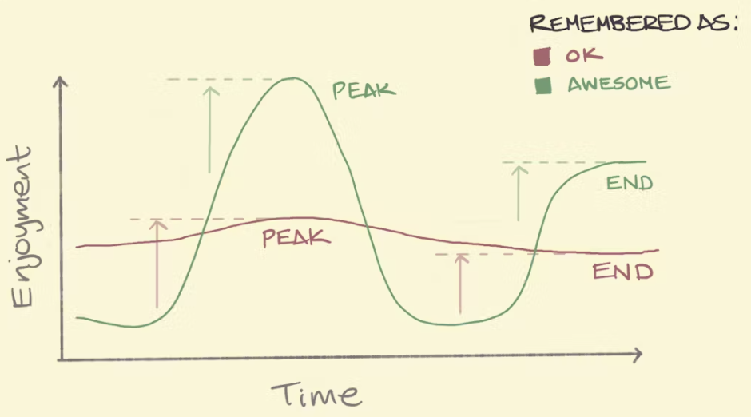 Image by sketplanation
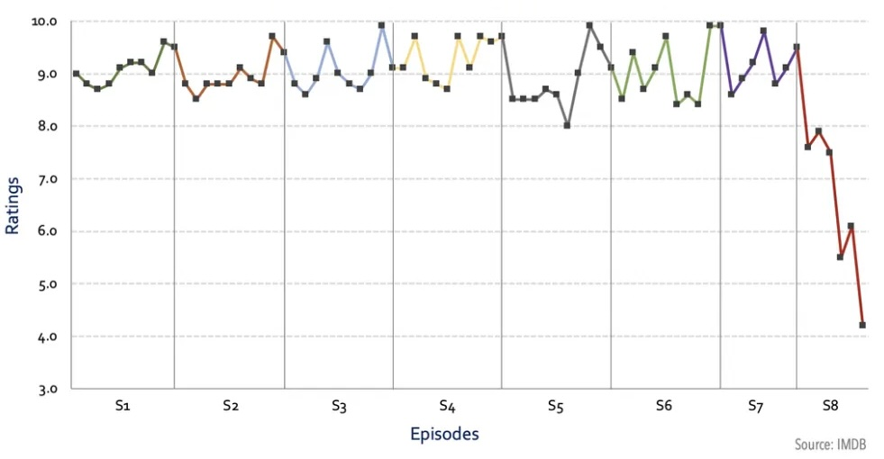
Game of Thrones rating, by Kelvin Neo
Data Storytelling:
Using storytelling tricks to create presentations that will be remembered and that create impact
Emotions create actions
The best example
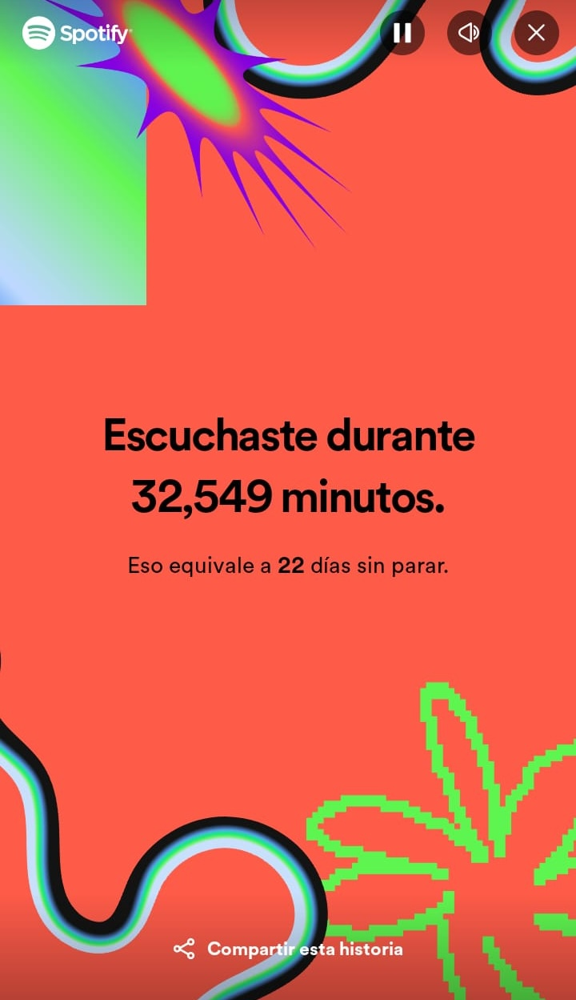
How to make millions of people share statistics on social media?
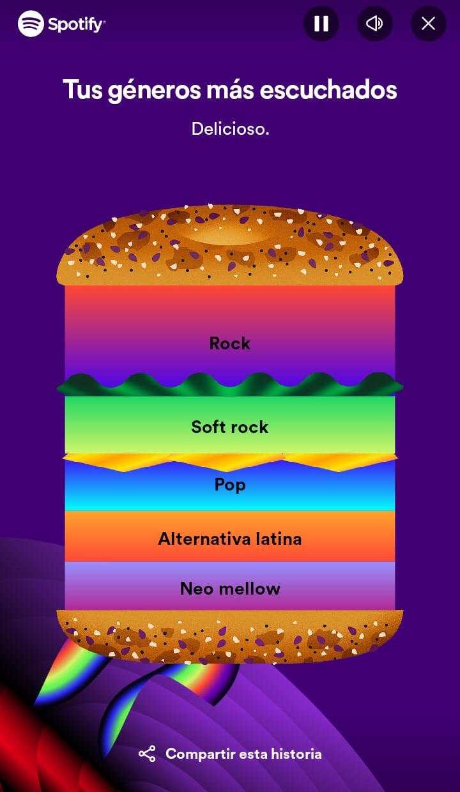
Data Storytelling
Tool #1: Visualization
Data Exploratory Viz
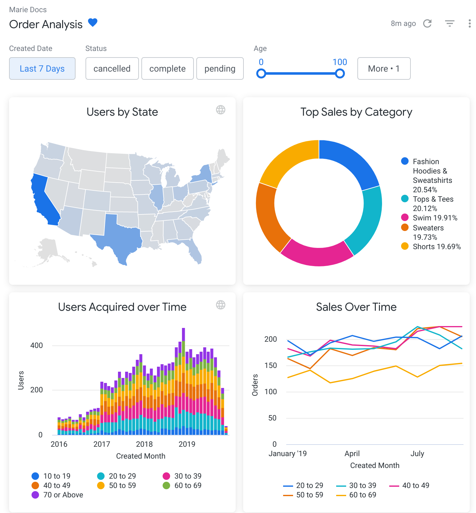

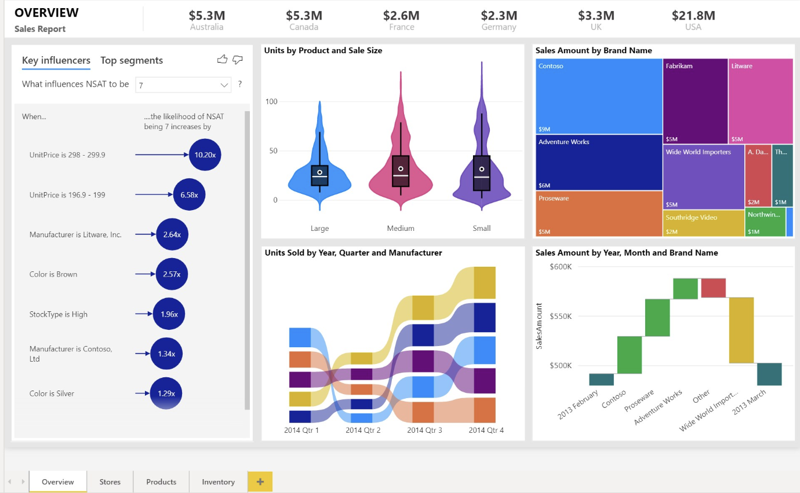
Too many options!
User cannot be responsible of finding your insights.
Storytelling principle #2:
Details are important,
but not all details are important.
Data Explanatory Viz
So many good python libraries!
- Classic: Matplotlib
- Rising starts: Seaborn, Plotly, Altair
- Other: bokeh, plotnine, pygal and more!
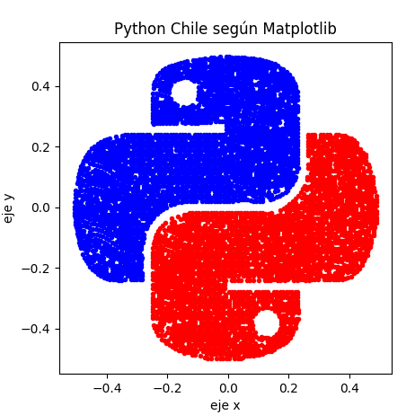
Pick one and master it
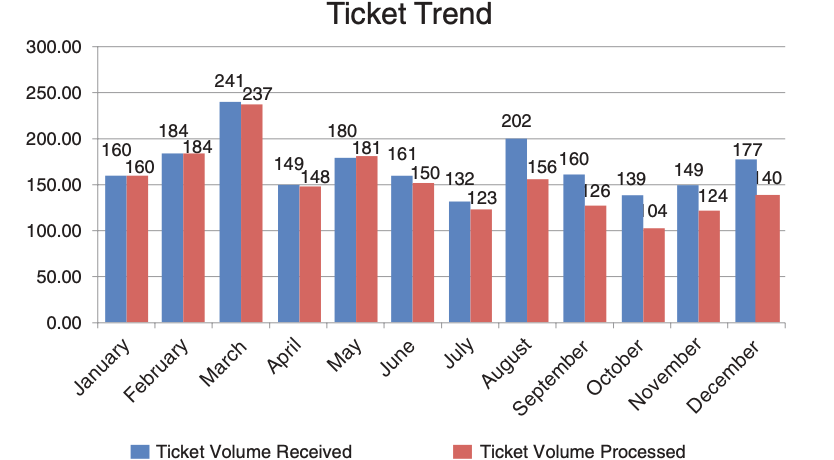
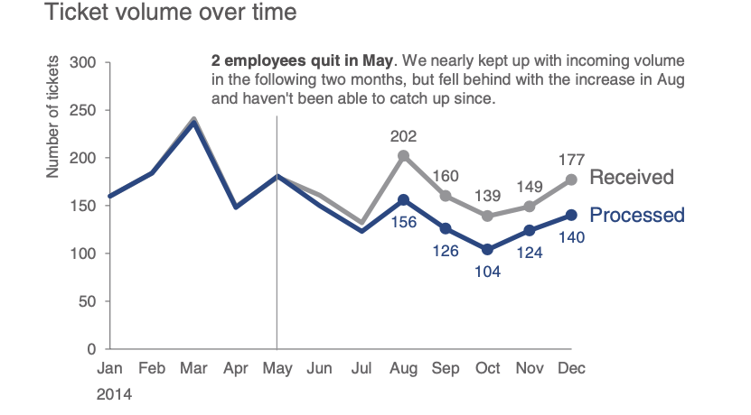
Don’t share numbers. Share a story.
(C) Storytelling with Data, por Cole Nussbaumer Knaflic.
Vizzu: A Data Storytelling library in JS & Python
Data Storytelling
Tool #2: AI
Storytelling principle #3:
Your first draft is always going to be terrible.
- Use AI chatbots for:
- Analogies and examples
- Prompts to create better images!
- Don’t search for images, create them!
Data Storytelling
Tool #3: Presentation
Storytelling principle #4:
Show, don’t tell.
Show, don’t tell.
Guido’s eyes lit up as the terminal finally executed without errors. A wide grin spread across his face. He jumped up from his chair, fists raised in triumph. “Yes!” he exclaimed, as he savored the moment of triumph with a deep, contented sigh.
Guido was happy because he solved the bug on his code.
Presentation tools
- Classic: PowerPoint
- “Show don’t tell” tools: quarto, jupyter + RISE, streamlit
- Other: canvas, revealjs, prezi
quarto
An open-source scientific and technical publishing system.
Focus on scientific markdown, dynamic & interactive documents based on code (Python/R/Julia).
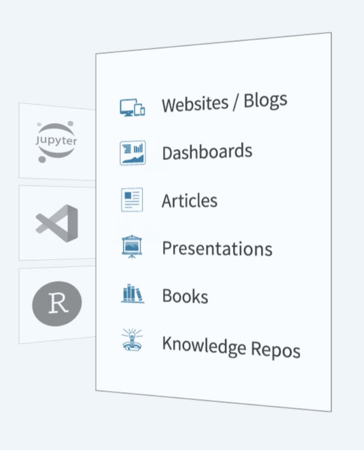
Code: example.qmd
---
title: "Habits"
author: "John Doe"
format:
revealjs:
transition: fade
theme: black
toc: true
center: true
---
## Getting up
- Turn off alarm
- Get out of bed
---
## Going to sleep
::: { .incremental }
- Get in bed
- Count sheep
:::Slides: example.html
Jupyter + RISE
Jupyter extension to display notebooks as revealjs slides.
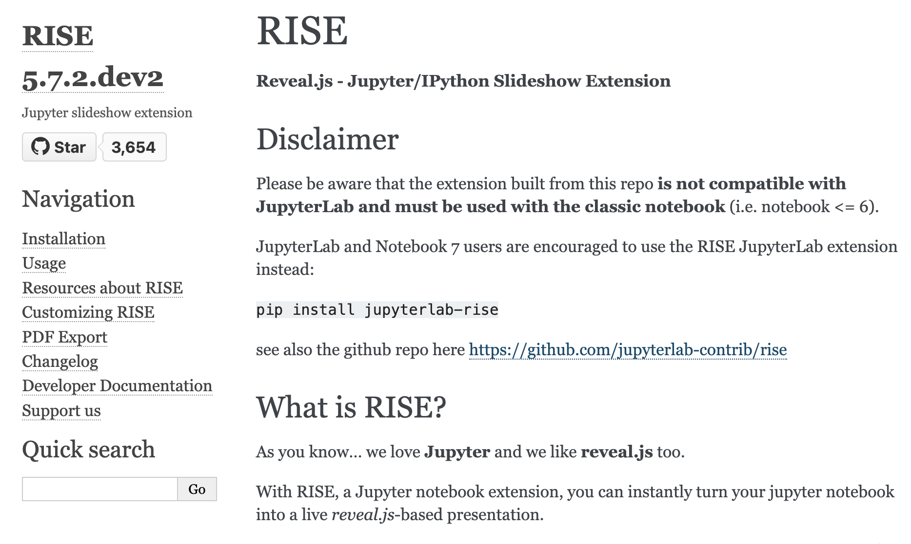
Jupyter + RISE
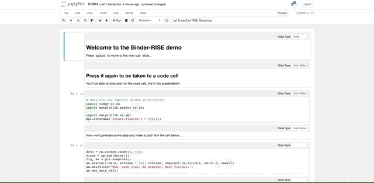
Streamlit
All python and as interactive as you can to code it…

Streamlit

A decision flow
- PowerPoint: Single use no-code presentation
- Quarto: Talks from related documents (books, articles)
- Jupyter + RISE: Workshops or classes. Executing code is important
- Streamlit: Customized/experimental presentations
End
Two stories
Data Storytelling for me
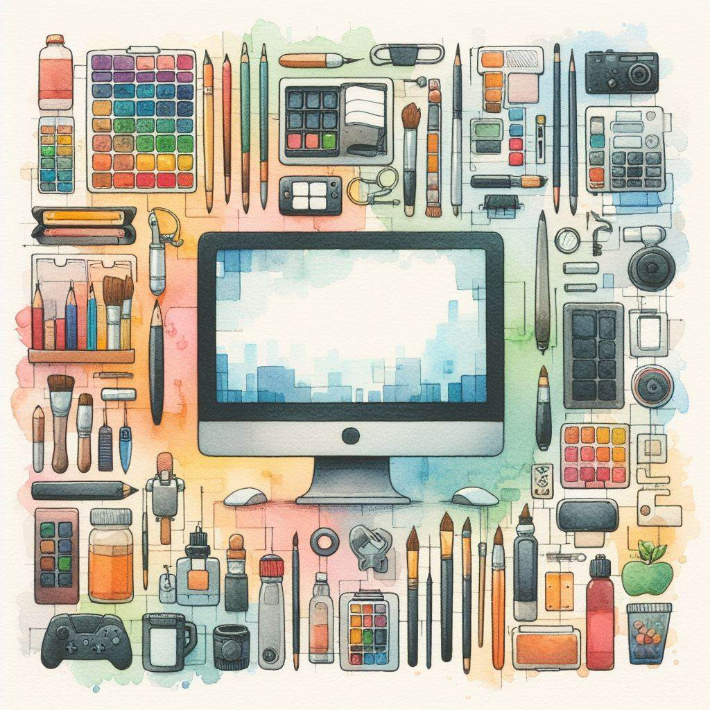 Data Storytelling for you?
I believe that…
- Data Storytelling is a crucial skill
- YOU can learn Data Storytelling skills and tools
Feedback
flowchart LR
A{"Liked the talked?"} --> |Yes| B{"Answer feedback?"}
A --> |No| B
B --> |Yes| C{"Keep in touch?"}
C --> Z["Thanks for coming to my talk!"]
B --> |No| Z
https://tinyurl.com/ycxj9ep5
Thank you!
sebastiandres | https://sebastiandres.xyz
Recommended reading
Storytelling
- Storyworthy, Matthew Dicks
- Made to Stick, Chip Heath and Dan Heath
https://tinyurl.com/ycxj9ep5
Recommended reading
Data Storytelling
- Storytelling with Data, Cole Nussbaumer Knaflic
- Data Visualization & Storytelling, Jose Berengueres and Marybeth Sandell
https://tinyurl.com/ycxj9ep5
https://tinyurl.com/ycxj9ep5
¡Gracias!
sebastiandres | https://sebastiandres.xyz